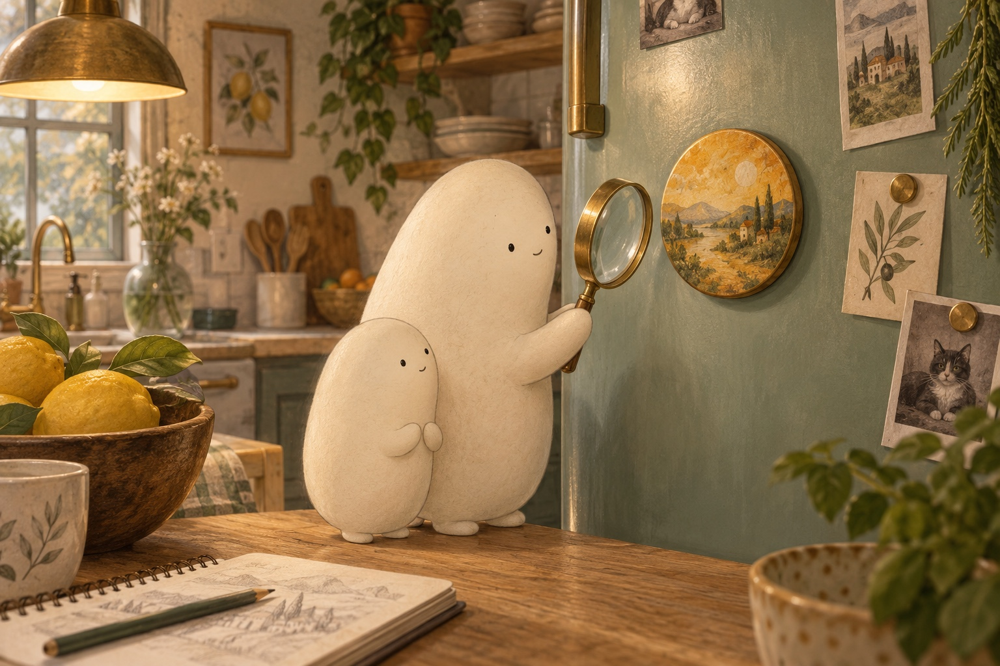
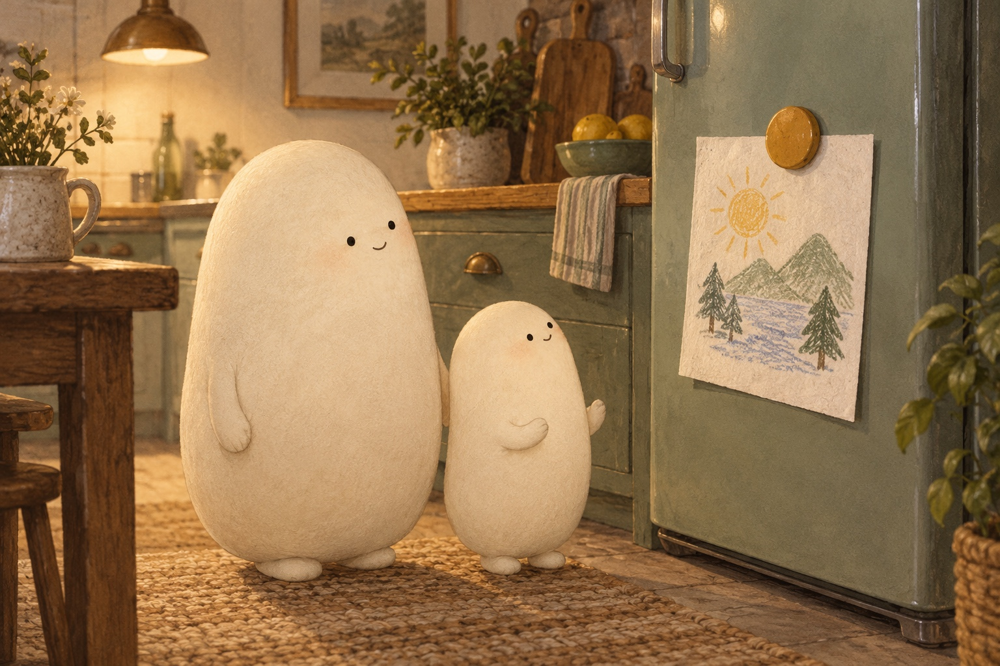
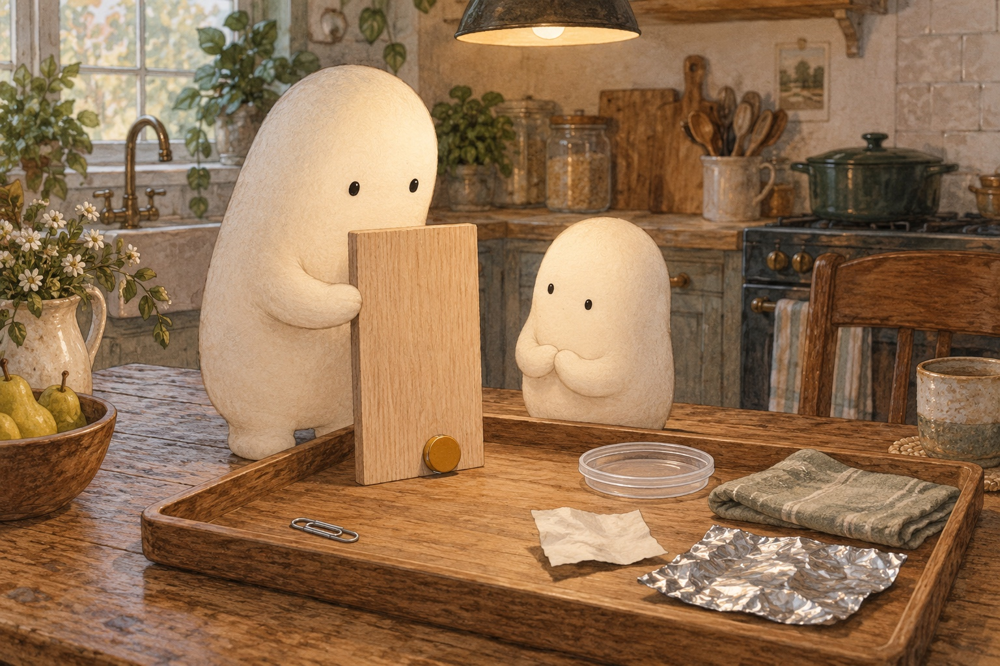
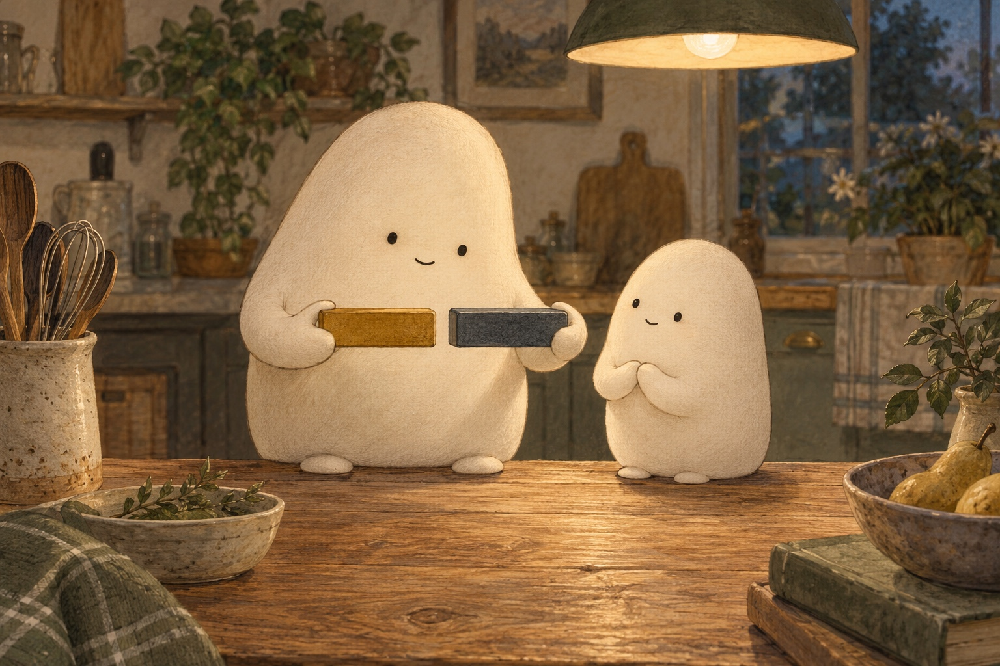
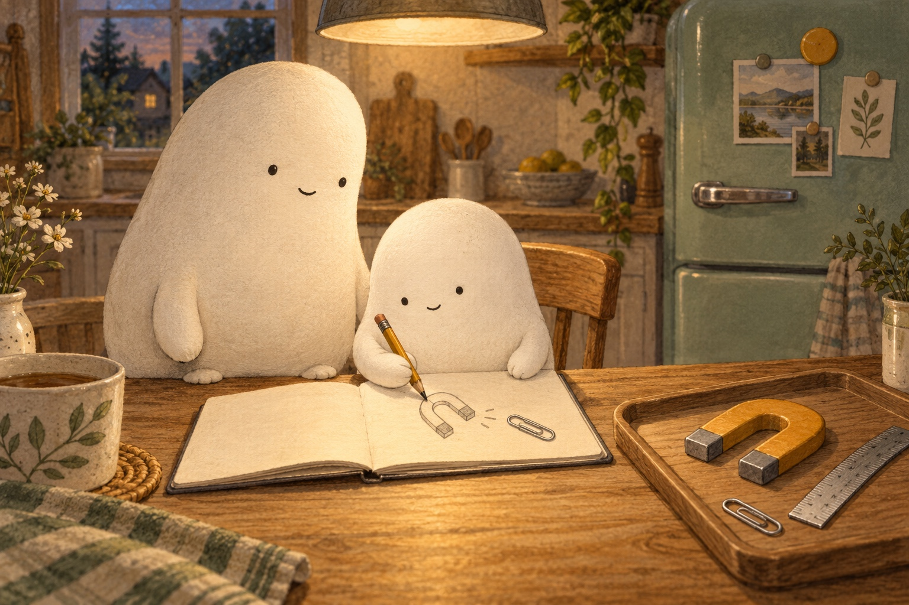

Follow the pull

A small kitchen mystery
Little Wonderer noticed a round magnet on the fridge. It stayed in place without a hand holding it. A magnet is an object that can pull certain metals toward it. Little brought the magnifier closer. “What makes it stick?” Big Wonderer stood beside Little, ready to look for clues.
What clue suggests a pull can act before things touch?

A pull that holds
Big lifted the magnet, then brought it close to the door. Little felt a tug before it touched. The magnet and the steel in this fridge door pulled toward each other. That pull helped it stick, or stay in place. A paper drawing stayed between them, even though the paper itself was not magnetic.
Why can a magnet hold paper to a steel door without pulling on the paper itself?

Try another surface
Would the same magnet stick everywhere? Big held up a wood board over a tray. The magnet began to slide, moving down the smooth surface. It did not stick to the plastic lid, paper, or cloth either. Shiny aluminum foil did not hold it. “Metal is not one kind of stuff,” Little noticed.
How did the foil test change the idea that all metal sticks?
A pull across a gap
Big set a steel paperclip on the tray, then moved the magnet nearer. Little watched the paperclip tip toward it across a small gap. Closer made the pull stronger. Farther away made it weaker. They moved slowly and checked the gap with a ruler. The distance that worked depended on this magnet and this paperclip.
How could you check whether moving closer changes the pull?

Turn and try again
Big brought out a second magnet. One way round, the magnets pulled together with a little snap. Big turned one around. Now their facing ends pushed apart. Little tried to bring them closer and felt the push. The same two magnets could pull or push, depending on how their ends faced.
What changed when Big turned one magnet around?

A question to keep
Little drew the fridge, the wood board, and the paperclip in a notebook. “Some things stick. Some slide. And a pull can cross a gap!” Big nodded. Little left room for one more question: “What sticks, what slides off, and how far can the pull reach?”
Which test would you repeat to learn how far the pull reaches?
For a complete still story, download the foldable book.
Fridge Magnets
What sticks, what slides off, and how far can the pull reach?
Where shall we look?
What holds a magnet to the fridge?
Look at the magnet holding the paper drawing.
A little explanation & something to try
The magnet and the steel in this fridge door pull toward each other. The pull helps the magnet stay put. It can act through a thin piece of paper; the paper does not have to be magnetic.
Try this. Point to the magnet, the paper, and the steel door. Tell which two pull toward each other.
Will it stick to every surface?
The magnet rests at the bottom of the wood board.
A little explanation & something to try
Magnets stick to some metals, including iron and many kinds of steel. They do not stick to wood, plastic, paper, or cloth. Aluminum foil and copper do not stick to an ordinary fridge magnet either.
Try this. With Big nearby, predict and try a few fridge magnets on a fridge door or steel cookie sheet and a tray of paper, a plastic lid, wood, aluminum foil, and a steel paperclip. Notice what sticks and what slides. Keep magnets away from screens, cards with stripes, and mouths.
How far can the pull reach?
Look for the tiny gap beside the paperclip.
A little explanation & something to try
A magnetic pull can act across a gap. The closer the magnet is, the stronger the pull. Farther away, it gets weaker. Different magnets and objects can give different results.
Try this. With Big beside you, slowly move a magnet toward a steel paperclip on a tray. Use a ruler or finger-widths to compare the gap where it first moves. Lift the paperclip a little with the magnet, then gently draw them apart over the tray until it lets go.
Can two magnets push apart?
Look at the two ends facing each other.
A little explanation & something to try
Two magnets can pull together or push apart. Turning one magnet can change which ends face each other, changing the pull to a push.
Try this. With Big, turn one of two large magnets around and notice whether they pull together or push apart.
Find the fridge patterns
Look for the step between numbers. Fill each missing number.
Choose one pattern and tell how you know the missing number fits.
1. Little lines up magnets in pairs. What number comes next?
2, 4, 6, ___
A small hint
Count forward by 2 each time.
2. Big counts sets of five magnetic tiles. What number is missing?
15, 20, ___, 30
A small hint
Add 5 to the number before the blank.
3. Little counts fridge stickers in tens. What number comes next?
30, 40, 50, ___
A small hint
Each new group adds 10 stickers.
4. Little marks every second centimeter on a paper ruler. What number is missing?
12, ___, 16, 18
A small hint
The marks go up by 2 centimeters.
5. Big counts five more magnets in each row. What number comes next?
40, 45, 50, ___
A small hint
Keep adding 5.
6. Little counts magnetic letters in groups of ten. What number is missing?
60, 70, ___, 90
A small hint
Count on by 10 from the number before the blank.
Give your magnet test its words
Say one clear command, then draw or write it.
Hold …tell where to hold the magnet
Try …name a surface to test
Notice …tell what changes as the magnet moves
Draw a magnet near the fridge or a steel paperclip. Show the gap.
SAY IT FIRST. THEN DRAW OR WRITE.
A temporary space. Copy your words before closing or reloading; they are not saved or sent.
magnetfridgenearfartherpullstickslidenotice
Does your command tell what to do, using a word such as Hold, Try, or Notice?
Find the pull
What will hold the magnet?
Steel fridge doorView from the sideA very weak pullCloser makes the pull stronger
Which surface held the magnet? Tell how changing the gap changed the pull.
Follow a little pull
- Choose steel, wood, plastic, or aluminum foil. Predict whether a fridge magnet will stick or slide.
- Hold the magnet nearer, then farther away. Steel gives a stronger pull close by; wood, plastic, and aluminum foil do not hold it.
- Touch the magnet to the surface and let go over a tray. The steel door holds it. The other surfaces let it slide.
- Tell what changed when you changed the surface or the gap. Try a steel paperclip next and measure where it first moves.
Quiz
Answer key
- Quiz 1
- The magnet and steel door pull toward each other, helping the magnet stay in place.
- Quiz 2
- A steel paperclip is attracted to a fridge magnet. Magnets stick to some metals, not all metals.
- Quiz 3
- The pull gets weaker as the magnet moves farther from the paperclip.
- Quiz 4
- Turning one magnet can change a pull to a push because different ends face each other.
Fridge Magnets
US Letter · one-sided · portrait · 100% / actual size. Turn off fit-to-page and browser headers and footers.
- Print the PDF and follow the fold guide on its page 8 panel.
- An adult makes the single center cut shown by the solid line.
- Fold into a little book. The cover, six scenes, and fold guide make eight pages.